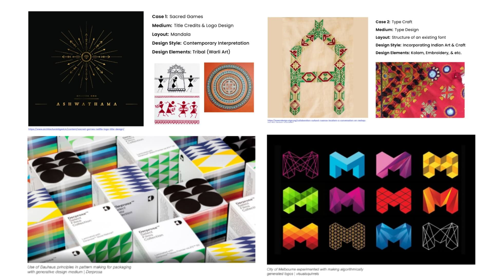

Overview
A capstone project for the Master’s in Visual Communication Design at Srishti Institute of Art, Design and Technology.
De-Coding Ikat:A Visual Exploration of Patterns through Generative Design
Approach: Transdisciplinary, Self-Driven Research
Duration: 4 months

Objective
This project investigates the integration of traditional artistry and modern technology, with a focus on preserving thecultural aesthetics of Indian Ikatwhile reimagining its patterns for the digital age. It examines visual perception, symbolic meanings, and design principlesrooted in Indian visual language, using generative design as a tool for reinterpretation. By bridgingage-old textile traditions with computational creativity,the project opens new pathways for cultural expression in contemporary design practice.
Ikat Textile: Visually rich, features geometric symmetry.
Motivation & Audience
This project is motivated by the desire to explore howart, design, and technology can intersect to reinterpret traditional crafts like Indian Ikat throughgenerative design.It aims to show how creative coding can serve as a bridge between cultural heritage and contemporary expression. The work is intended fordesigners, artists, and technologistsinterested in Indian visual language, computational design, and craft-informed innovation.
Illustration outlining the transdisciplinary nature of the project
Research & Field Visits
To investigate the cultural and historical significance of Ikat patterns, the research phase commenced with a comprehensive study of both global and Indian Ikat traditions. Field visits to weaving centers offered direct exposure to traditional practices, enabling a deeper understanding of the intricate weaving techniques and the rich cultural narrativesembedded within these patterns.
Pattern Analysis
This phase involved deconstructing Ikat patterns by examining motifs, repetition, and grid compositions.Focus was given tovertical, horizontal, and double-pattern structures, exploring their role in creating visual rhythm and conveying cultural meaning.

Ikat patterns show a striking resemblance to the layout of Pachisi, a traditional board game that originated in India.
Pattern Analysis: Identifying the motifs, grids and compositions.
Learning & Application
In this phase, I explored how traditional art forms can be reinterpreted to bridge cultural heritage with contemporary design practices.I also examined the role of generative designin graphic design, analyzing its potential to enhancebranding, visual identity, and digital media,thereby expanding the boundaries of creative expression.
Explored how traditional art forms can be reinterpreted.
Experimentation & Iteration
This phase focused on developingIkat-inspired motifsthrough continuous experimentation and iteration. By testing variations across grid structures and dynamic compositions,the project moved beyond traditional constraints to explore moreadaptive and contemporary design applications.

Coding the Motifs and compositions in processing.js
200 Lines Program
A choice of 4 different motifs in 3 different grids and random colors producing ‘n’ number of patterns.
{kind=link}
{kind=link}
{kind=link}
{kind=link}
{kind=link}
{kind=link}
Prototyping & Branding
Ikat-inspired generated patternswere seamlessly incorporated into thevisual language and user experience,striking a balance betweenheritage-driven design and modern usability across branding, interfaces, and digital media.
Impact & Key Takeaways
Cultural & Technological Contribution
Blending traditional Ikat with modern tech, this project reimagines cultural aesthetics for today’s audiences—using generative design to enrich digital storytelling and contemporary visual identity.
Personal Growth
This project strengthened my coding, cross-disciplinary thinking, and problem-solving skills, deepening my understanding of the synergy between art and technology.
Conclusion
This has marked a pivotal step in exploring how technology can elevate cultural narratives. Moving forward, I’m eager to delve deeper into the intersection of design & technology